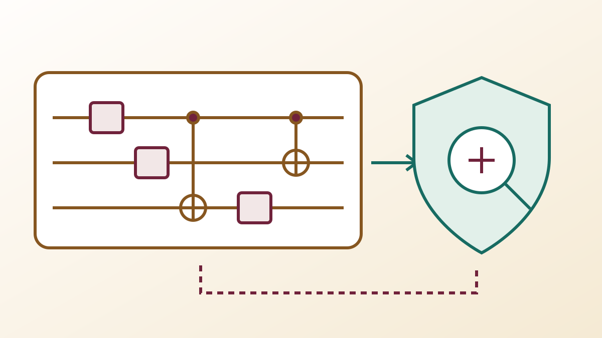
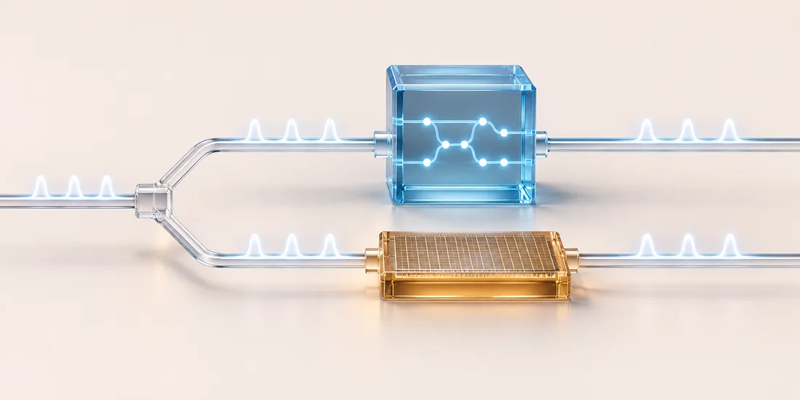
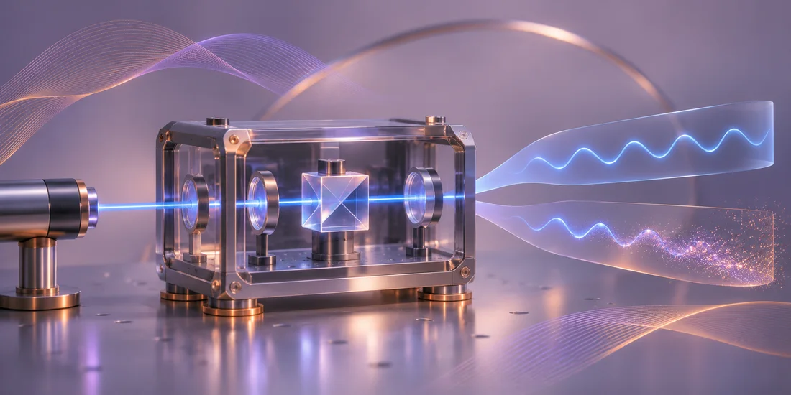

Exploring quantum learning architectures and the questions that arise when trainability, reliability and security are considered together.

Research Description
Overview
We explore the trainability and reliability of quantum machine learning (quantum ML) and hybrid quantum–classical architectures. The focus is on careful evaluation of circuit structure, optimization behavior and computational assumptions rather than assuming that quantum components provide an advantage.
The Q-Capsule preprint investigates localized capsule-based architectures for barren plateau mitigation. Security and robustness testing form an emerging agenda, with controlled comparisons needed to distinguish architectural effects, noise and adversarial sensitivity.
Research Thrusts
Localized quantum architectures
Explore circuit locality and capsule-based structure through the Q-Capsule preprint, focusing on trainability and barren plateau behavior.

Transparent hybrid evaluation
Compare quantum and hybrid learning under clearly reported simulator conditions, classical baselines and resource budgets.

Emerging security questions
Develop questions around noise, reliability and adversarial conditions in quantum AI. Security evaluation is an emerging direction rather than a demonstrated defense.
Research Goals
Study localized quantum architectures and rigorous evaluation of hybrid quantum–classical learning. Security evaluation remains an emerging direction.
Intellectual Merit
Investigate how circuit structure and locality affect trainability while separating observed simulator results from claims of practical quantum advantage.
Research Impact
This research aims to clarify when architectural choices help quantum learning and how those effects should be evaluated. Simulator findings do not by themselves establish practical quantum advantage or operational security benefits.
Current Projects & Emerging Directions
Preprint · architecture research
Localized quantum learning with Q-Capsule
Localized circuits→Gradient & training behavior→Model evaluation
Training quantum neural models can become difficult when optimization landscapes yield very small gradients. Q-Capsule explores a localized capsule-based architecture as a way to investigate this trainability problem.
Research objectives
Study how localized circuit structure influences learning and barren plateau behavior in quantum neural architectures.
Approach & Intellectual Merit
The Q-Capsule preprint provides the architecture-focused foundation. Evaluation should distinguish trainability, predictive performance and computational resources, using transparent simulation conditions and relevant baselines.
Relevance & Applications
This contributes to experimental quantum and hybrid learning research. Improved trainability in a studied setting is not a claim of general quantum advantage or a deployed security capability.
Impact
A research basis for studying trainability. Practical quantum advantage and deployed security benefits are not established by this page.
ICTAI 2026 · Full paper
Separating entanglement from nonlinear encoding in transformer attention
One attention scorer→Matched circuit controls→Accuracy & attention entropy
Does quantum entanglement itself improve a transformer's predictions, or do observed changes come from nonlinear encoding? This controlled study replaces only the scoring function of one attention head with a parameterized quantum circuit while keeping the surrounding model classical and matched across conditions.
Research objectives
Isolate query–key entanglement from other architectural changes. Compare a classical scorer with quantum circuits using no entangling gates, within-register gates, cross-register gates and both types of gates.
Approach & Intellectual Merit
Simulated experiments on TREC-6 and AG News combine structural propositions with controls for head count, dimensional bottlenecks, circuit width and training-data size. The main comparisons use five seeds and exact permutation tests; validation selects checkpoints independently of test evaluation.
Findings & relevance
The non-separable quantum conditions did not provide a statistically significant accuracy gain over the classical baseline in the evaluated settings. Quantum scorers increased attention entropy, but the study attributes that change to nonlinear data encoding rather than entangling topology. The contribution is a controlled method for evaluating hybrid quantum–classical models, not evidence of practical quantum advantage.
Scope & next questions
The experiments use statevector simulation, two text-classification benchmarks and a 5,000-example AG News training subset. Small effects may escape detection; other encodings, gates, readouts or tasks may behave differently. Hardware speedups and security benefits were not demonstrated.
Quantum and hybrid learning systems introduce architectural and execution assumptions that deserve explicit scrutiny. Their robustness cannot be inferred from either classical model results or the presence of quantum components.
Research objectives
Formulate reproducible tests for sensitivity to unreliable data, perturbations and execution conditions.
Approach & Intellectual Merit
This remains a proposed direction. Controlled comparisons should separate circuit architecture, optimization, noise and adversarial assumptions; classical and hybrid baselines are necessary to interpret any future results.
Relevance & Applications
The intended contribution is a rigorous basis for assessing quantum-learning reliability before operational use. No completed defense or security advantage is claimed for this direction.
Impact
Research questions rather than demonstrated defenses or operational deployments.
Related Publications
Preprint
Q-Capsule: A Localized Capsule-Based Quantum Neural Architecture for Barren Plateau Mitigation
Awal Ahmed Fime, Tasfia Zaman Samiha, Saika Zaman, Dimitris Pados, George Sklivanitis, Abdur R Shahid, Ahmed Imteaj
@misc{shield87,
title = {Q-Capsule: A Localized Capsule-Based Quantum Neural Architecture for Barren Plateau Mitigation},
author = {Awal Ahmed Fime and Tasfia Zaman Samiha and Saika Zaman and Dimitris Pados and George Sklivanitis and Abdur R Shahid and Ahmed Imteaj},
year = {2026},
howpublished = {arXiv preprint arXiv:2610.11261},
url = {https://arxiv.org/abs/2610.11261}
}
Conference
When Quantum Entanglement Meets Transformer Attention: A Controlled Study of Quantum Attention Heads
Mohd Farhan Israk Soumik, Hussein Zangoti, Arun Babu Aryal, Ahmed Imteaj, Abdur R. Shahid
IEEE International Conference on Tools with Artificial Intelligence (ICTAI) · 2026
A controlled study replaces one transformer attention scorer with a parameterized quantum circuit while matching the surrounding classical model. Simulated TREC-6 and AG News experiments compare separable and non-separable scoring conditions with structural and data-size controls. The evaluated non-separable quantum conditions do not yield a statistically significant accuracy gain over the classical baseline. Increased attention entropy is attributed to nonlinear encoding rather than entangling topology. These findings are limited to the studied datasets, circuit choices and simulation settings; they do not establish a general absence of quantum benefits or practical quantum advantage.
@inproceedings{shield90,
title = {When Quantum Entanglement Meets Transformer Attention: A Controlled Study of Quantum Attention Heads},
author = {Mohd Farhan Israk Soumik and Hussein Zangoti and Arun Babu Aryal and Ahmed Imteaj and Abdur R. Shahid},
year = {2026},
booktitle = {IEEE International Conference on Tools with Artificial Intelligence (ICTAI)}
}